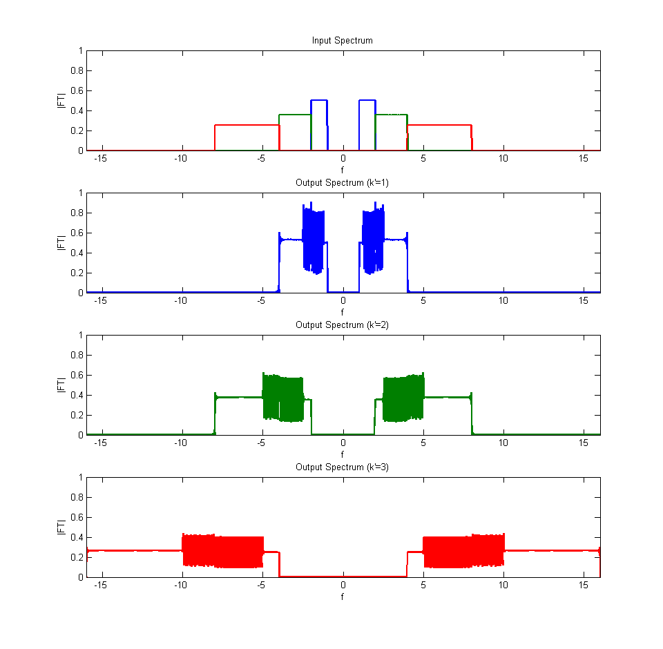
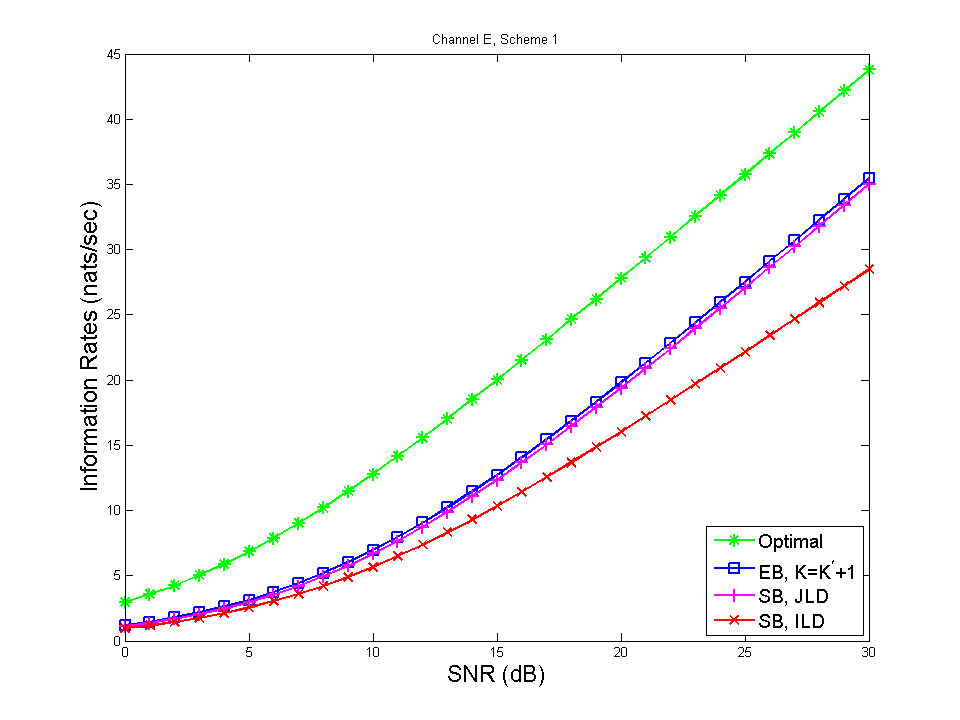

Multi-Layer Transmission in Wideband Linear Time-Varying Channels
Contents
Choose Channel, Scheme and SNR Values
SNRdB_vec = 0:30;
channel_index = 5;
scheme_index = 1;
Open Log File
sim_start = tic;
global log_file
log_filename = ['log_channel' num2str(channel_index) '_scheme' num2str(scheme_index) '.txt'];
log_file = fopen(log_filename,'w');
Simulation Paramters
PASSBAND = true;
T_TRANSMISSION = 32;
F_samp = 64;
N0 = 1;
SIM.PASSBAND = PASSBAND;
if(PASSBAND)
SIM.REAL_DIM_PER_SYM = 1;
else
SIM.REAL_DIM_PER_SYM = 2;
end
SIM.T_TRANSMISSION = T_TRANSMISSION;
SIM.T_SIMULATION = 3*T_TRANSMISSION;
SIM.df = 1.0/SIM.T_SIMULATION;
SIM.F_samp = F_samp;
SIM.dt = 1.0/F_samp;
t = linspace(0,SIM.T_SIMULATION,SIM.T_SIMULATION/SIM.dt+1);
t(end) = [];
SIM.t = t;
SIM.N0 = N0;
SNR_vec = 10.^(SNRdB_vec/10);
P_vec = SNR_vec * N0;
Transmission Scheme Parameters
SCHEMES{1} = [1,2,3,1.5];
SCHEMES{2} = [1,1.587401051968199,4,1.5];
SCHEMES{3} = [7,1,1,4.5];
SCH = SCHEMES{scheme_index};
W_base = SCH(1); a_base = SCH(2); K_prime = SCH(3); fc_base = SCH(4);
print_log('Scheme parameters:\n')
print_log(sprintf('W = %f, a = %f, K^prime = %d\n', W_base, a_base, K_prime))
Scheme parameters:
W = 1.000000, a = 2.000000, K^prime = 3
Generate the Transmitter Matrix
print_log('Generating transmitter matrix\n')
[H_TX f_min f_max] = generate_vecs(W_base,a_base,K_prime,fc_base, SIM);
B_TOTAL = f_max - f_min;
fc = (f_max + f_min)/2;
Generating transmitter matrix
Layer 1: 2x32 (real) symbols
Layer 2: 2x64 (real) symbols
Layer 3: 2x128 (real) symbols
f_min = 1.00000, f_max = 8.00000, B = 7.00000
Channel Parameters
CH.N_paths = 2; CH.h_wb = [1 1/2]; CH.tau = [0 2]; CH.alpha = [1 2];
CHANNELS{1} = CH;
CH.N_paths = 2; CH.h_wb = [1 1/2]; CH.tau = [0 2]; CH.alpha = [1 1.587401051968199];
CHANNELS{2} = CH;
CH.N_paths = 2; CH.h_wb = [1 1.5]; CH.tau = [0 2]; CH.alpha = [1 2];
CHANNELS{3} = CH;
CH.N_paths = 2; CH.h_wb = [1 1.5]; CH.tau = [2 3]; CH.alpha = [1 2];
CHANNELS{4} = CH;
CH.N_paths = 3; CH.h_wb = [1 -0.7 1.5]; CH.tau = [2 1 3]; CH.alpha = [1 1.25 2];
CHANNELS{5} = CH;
CHANNEL_LABEL = {'A','B','C','D','E'};
CH = CHANNELS{channel_index};
print_log('Channel parameters:\n')
fields = fieldnames(CH);
for i = 1:length(fields)
print_log( sprintf('%s = %s\n', fields{i}, mat2str( getfield(CH,fields{i}) )) );
end
Channel parameters:
N_paths = 3
h_wb = [1 -0.7 1.5]
tau = [2 1 3]
alpha = [1 1.25 2]
Generate the Channel Matrix
print_log('Generating channel matrix\n')
K0_t_tau = generate_ch_matrix(CH, SIM);
H_CH = K0_t_tau * SIM.dt;
Generating channel matrix
Generate the Receiver Matrix
print_log('Generating receiver matrix\n')
SIM_RX = SIM;
SIM_RX.T_TRANSMISSION = SIM.T_TRANSMISSION + max(CH.tau);
[H_RX f_min f_max] = generate_vecs(W_base,a_base,K_prime,fc_base, SIM_RX);
K = K_prime+1;
[H_RX_EB f_min f_max] = generate_vecs(W_base,a_base,K,fc_base, SIM_RX);
Generating receiver matrix
Layer 1: 2x35 (real) symbols
Layer 2: 2x70 (real) symbols
Layer 3: 2x140 (real) symbols
f_min = 1.00000, f_max = 8.00000, B = 7.00000
Layer 1: 2x35 (real) symbols
Layer 2: 2x70 (real) symbols
Layer 3: 2x140 (real) symbols
Layer 4: 2x280 (real) symbols
f_min = 1.00000, f_max = 16.00000, B = 15.00000
Optimal Receiver
print_log('Computing rate for optimal receiver\n')
tic
R_OPT = info_rate_optrx(H_TX, H_CH, P_vec, SCHEMES{scheme_index}, SIM);
runtime = toc;
print_log(sprintf('(%.2f sec)\n',runtime))
RUNTIMES.OPT = runtime;
Computing rate for optimal receiver
(135.58 sec)
Multi-Layer Receiver, Expanded Bandwidth with Joint Decoding
print_log('Computing rate for expanded band receiver\n')
tic
R_EB = info_rate_expand(H_TX, H_CH, H_RX_EB, P_vec, SCHEMES{scheme_index}, SIM);
runtime = toc;
print_log(sprintf('(%.2f sec)\n',runtime))
RUNTIMES.EB = runtime;
Computing rate for expanded band receiver
(70.94 sec)
Multi-Layer Receiver, Same Bandwidth with Joint Layer Decoding
print_log('Computing rate for same band receiver with joint layer decoding\n')
tic
R_SB_JLD = info_rate_expand(H_TX, H_CH, H_RX, P_vec, SCHEMES{scheme_index}, SIM);
runtime = toc;
print_log(sprintf('(%.2f sec)\n',runtime))
RUNTIMES.SB_JLD = runtime;
Computing rate for same band receiver with joint layer decoding
(20.69 sec)
Multi-Layer Receiver, Same Bandwidth with Individual Layer Decoding
print_log('Computing rate for same band receiver with individual layer decoding\n')
tic
R_SB_ILD = info_rate_ild( H_TX, H_CH, H_RX, P_vec, SCHEMES{scheme_index}, SIM );
runtime = toc;
print_log(sprintf('(%.2f sec)\n',runtime))
RUNTIMES.SB_ILD = runtime;
Computing rate for same band receiver with individual layer decoding
(11.02 sec)
Collect and Save Results
print_log('Collecting results\n')
SNR_vec = P_vec/N0;
SNRdB_vec = 10*log10(SNR_vec);
DATA.SIM = SIM;
DATA.SNRdB = SNRdB_vec;
DATA.CHANNEL_PARAMS = CH;
DATA.SCHEME_PARAMS = SCHEMES{scheme_index};
DATA.RX.OPT .RATE = R_OPT;
DATA.RX.EB .RATE = R_EB;
DATA.RX.EB .LABEL = sprintf('EB (K=%d)',K);
DATA.RX.SB_JLD.RATE = R_SB_JLD;
DATA.RX.SB_ILD.RATE = R_SB_ILD;
sim_runtime = toc(sim_start);
DATA.RUNTIME = sim_runtime;
keyword = '';
timestamp = datestr(now,'HHMMSS');
tail = [timestamp keyword];
root_filename = ['channel' lower(CHANNEL_LABEL{channel_index}) '_'];
root_filename = [root_filename 'scheme' num2str(scheme_index) '_'];
data_filename = [root_filename tail];
save(data_filename, 'DATA');
fprintf('Output saved to file: %s\n',data_filename)
print_log(sprintf('Simulation runtime: %.2f sec.\n',sim_runtime))
fclose(log_file);
Collecting results
Output saved to file: channele_scheme1_055339
Simulation runtime: 244.53 sec.
Plot Input and Output Spectra (broken down by layer)
plot_spectrum(H_TX, H_CH, SCH, CH, SIM)
fig_filename = ['SPECTRUM_' 'CH' CHANNEL_LABEL{channel_index} '_SCH' num2str(scheme_index) '.eps'];
print('-depsc', fig_filename)

Plot Information Rates
LineWidth = 2;
MarkerSize = 10;
FontSize = 17;
FontSizeLegend = 14;
line_style = { 'g*-', 'bs-', 'm+-', 'rx-', 'bo-'};
ch = ['CHANNEL' CHANNEL_LABEL{channel_index}];
sch = ['SCHEME' num2str(scheme_index)];
fig_index = 1000;
set(figure(fig_index),'Name','Rate (nats/sec) vs SNR (dB)')
plot(SNRdB_vec,R_OPT,...
line_style{1},'LineWidth',LineWidth,'MarkerSize',MarkerSize)
hold on
plot(SNRdB_vec,R_EB,...
line_style{2},'LineWidth',LineWidth,'MarkerSize',MarkerSize)
plot(SNRdB_vec,R_SB_JLD,...
line_style{3},'LineWidth',LineWidth,'MarkerSize',MarkerSize)
plot(SNRdB_vec,R_SB_ILD,...
line_style{4},'LineWidth',LineWidth,'MarkerSize',MarkerSize)
hold off
title(['Channel ' CHANNEL_LABEL{channel_index} ', Scheme ' num2str(scheme_index)])
xlabel('SNR (dB)','FontSize',FontSize)
ylabel('Information Rates (nats/sec)','FontSize',FontSize)
legend(...
'Optimal',...
'EB, K=K^\prime+1',...
'SB, JLD',...
'SB, ILD',...
'Location','SouthEast')
handles = get(fig_index,'Children');
set(handles(1),'FontSize',FontSizeLegend);
set(fig_index,'Position',[2*480 50 2*480 2*360]);figure(fig_index)
fig_filename = ['RATE_' ch '_' sch '.eps'];
print('-depsc', fig_filename)
